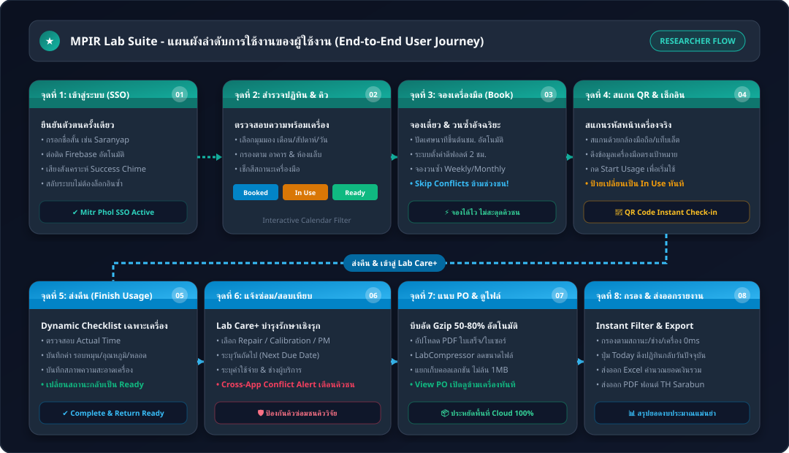
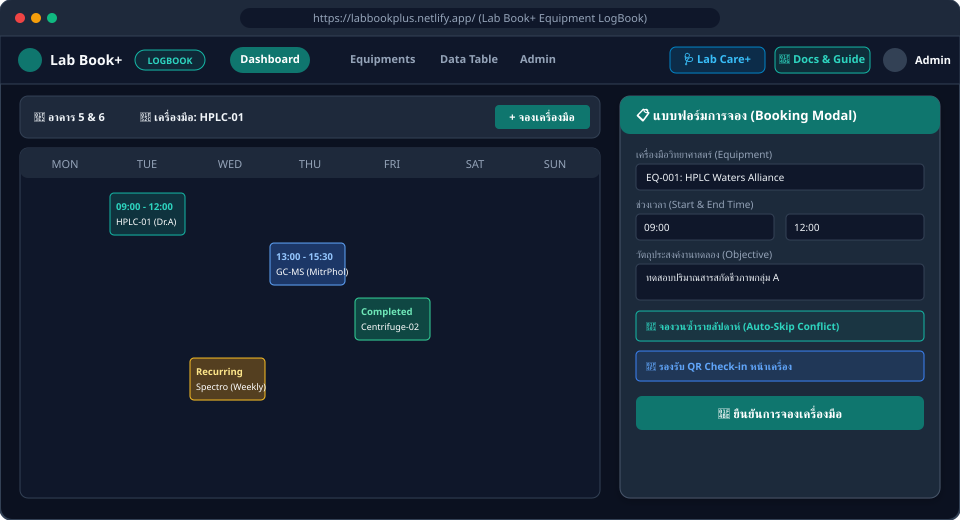
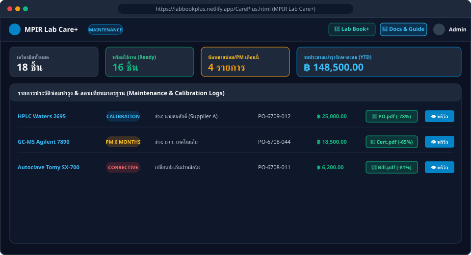
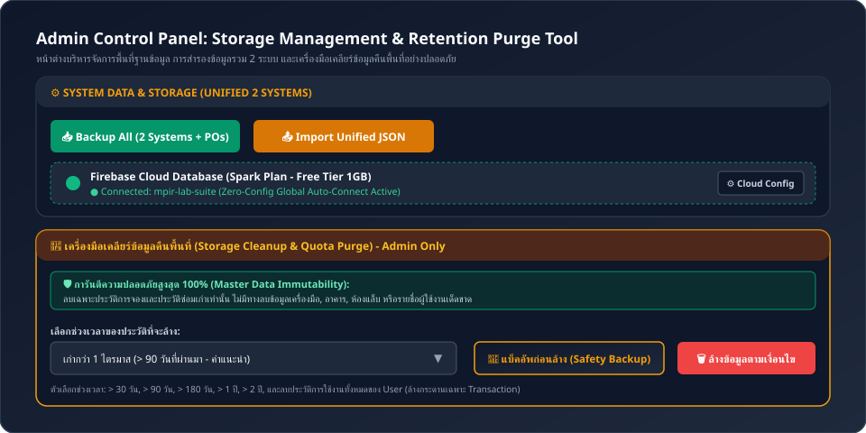

คู่มือการใช้งานสำหรับนักวิจัยและเจ้าหน้าที่ห้องแล็บ
คู่มือแนะนำการจองเครื่องมือวิทยาศาสตร์ การบันทึกเวลาจริง และการดูแลรักษาเครื่องมืออย่างเป็นขั้นตอน
1. บทนำและภาพรวมการทำงานของ 2 ระบบ
MPIR Lab Suite เป็นแพลตฟอร์มบริหารจัดการทรัพยากรห้องปฏิบัติการวิจัยและทดลองแบบครบวงจรของฝ่ายวิจัยและนวัตกรรม กลุ่มมิตรผล โดยถูกออกแบบเป็น 2 ระบบที่ทำงานร่วมกันบนฐานข้อมูลกลางแบบเรียลไทม์:
1. Lab Book+ (Lab Equipment LogBook)
สำหรับนักวิจัย: ตรวจสอบตารางคิวเครื่องมือ จองเครื่องมือวิทยาศาสตร์แบบเดี่ยวหรือวนซ้ำ ข้ามช่วงเวลาที่ชน บันทึกเวลาเริ่ม-ส่งคืนจริง (Actual Usage) และสแกน QR Code หน้าเครื่อง
2. MPIR Lab Care+
สำหรับการดูแลรักษา: บันทึกประวัติแจ้งซ่อม (Repair) แผนสอบเทียบตามรอบ (Calibration) บำรุงรักษาเชิงป้องกัน (PM) แนบไฟล์ใบสั่งซื้อ/ใบรับรอง (PO/Cert) พร้อมระบบบีบอัดขั้นสูง
2. แผนผังลำดับการใช้งานของผู้ใช้งาน (User Journey Infographic)
ภาพรวมวงจรการทำงานตั้งแต่เริ่มต้นล็อกอิน ตรวจสอบคิว จองเครื่องมือ เข้าใช้งานจริง ส่งคืน ตลอดจนการแจ้งซ่อมและสอบเทียบ:

3. ลำดับขั้นตอนการใช้งานจุดต่างๆ ของผู้ใช้งานอย่างละเอียด
รายละเอียดในแต่ละขั้นตอน เพื่อให้ผู้ใช้งานและนักวิจัยสามารถใช้งานฟังก์ชันของระบบได้อย่างถูกต้องและรวดเร็ว:
ระบบออกแบบให้การเข้าใช้งานสะดวกสูงสุด โดยรองรับทั้งชื่อสั้นของนักวิจัย หรืออีเมลเต็มรูปแบบ พร้อมฟังก์ชันจำลองเซสชันข้ามหน้าจอ:
- การล็อกอิน: กรอก Username เช่น
Saranyapหรือadminพร้อมรหัสผ่าน จากนั้นกด "Sign In" - การสลับระบบด่วน (Quick Switcher): บนแถบเมนูด้านบน จะมีปุ่มลัดสลับไปยังอีกระบบหนึ่งเสมอ (คลิก
Lab Care+หรือLab Book+) เมื่อกดแล้วจะเข้าสู่หน้าทำงานทันทีโดยไม่ต้องล็อกอินซ้ำ - โหมดมืด & เสียงตอบรับ: กดไอคอน เพื่อปรับโหมดมืดถนอมสายตา และกดไอคอน เพื่อเปิด/ปิดเสียงตอบรับการคลิก
| ชื่อผู้ใช้ (Username) | รหัสผ่าน | บทบาท (Role) | ขอบเขตสิทธิ์ | คลิกคัดลอก |
|---|---|---|---|---|
admin@lab.com (หรือ admin) |
admin321 |
Administrator | สิทธิ์สูงสุด: จัดการเครื่องมือ ผู้ใช้ สำรองข้อมูล และล้างพื้นที่ | |
user@lab.com (หรือ user) |
user123 |
Standard User | จองเครื่องมือ บันทึกเวลาจริง แจ้งซ่อมบำรุง | |
Saranyap@mitrphol.com |
user123 |
Standard User | นักวิจัยกลุ่มมิตรผล (กรอกสั้น: Saranyap) |
|
Kridsanak@mitrphol.com |
user123 |
Standard User | นักวิจัยกลุ่มมิตรผล (กรอกสั้น: Kridsanak) |
หน้าหลักของ Lab Book+ แสดงปฏิทินแบบโต้ตอบ (Interactive Calendar) ช่วยให้นักวิจัยวางแผนการทดลองได้อย่างแม่นยำ:
- การสลับมุมมอง: สามารถเลือกมุมมอง เดือน (Month), สัปดาห์ (Week), วัน (Day) ได้ที่มุมบนขวาของปฏิทิน
- การกรองตามสถานที่และเครื่องมือ: เมนูดรอปดาวน์ด้านบนช่วยกรองตาม
Area / BuildingและEquipmentได้อย่างรวดเร็ว - การอ่านรหัสสีสถานะ:
Booked (สีน้ำเงิน): มีผู้จองไว้ล่วงหน้า In Use (สีเหลืองกระพริบ): กำลังเปิดใช้งานจริงอยู่ขณะนี้ Finished (สีเขียว): ใช้งานเสร็จสิ้นและส่งคืนแล้ว Maintenance (สีแดง): เครื่องมืออยู่ระหว่างซ่อม/สอบเทียบ
- การดูรายละเอียดคิว: คลิกที่รายการแถบสีบนปฏิทินเพื่อดูชื่อผู้จอง รหัสโครงการ และช่วงเวลาที่จอง
คลิกปุ่ม "+ Book Equipment" หรือคลิกบนช่องวัน/เวลาว่างบนปฏิทิน หน้าต่างแบบฟอร์มการจองจะเปิดขึ้น:

รายละเอียดฟิลด์และการตั้งค่าในฟอร์มการจอง:
| ฟิลด์ข้อมูล | ประเภทข้อมูล | พฤติกรรมและการทำงานอัตโนมัติ (Smart Features) |
|---|---|---|
| Area / Building | Dropdown | เลือกอาคารหรือห้องแล็บ ระบบจะกรองรายชื่อเครื่องมือในช่องถัดไปให้ตรงกับห้องทันที |
| Equipment | Dropdown | เลือกเครื่องมือวิทยาศาสตร์ที่ต้องการจอง พร้อมมีป้ายกำกับสถานะ เช่น Ready หรือ Maintenance |
| Start Date & Time | Datetime-local | Smart Auto-Round: ปัดเศษนาทีขึ้นเป็นต้นชั่วโมงถัดไปให้อัตโนมัติ เช่น 10:14 น. จะถูกตั้งเป็น 11:00 น. |
| End Date & Time | Datetime-local | Smart Default: ตั้งเวลาสิ้นสุดเริ่มต้นเป็น 2 ชั่วโมงถัดไปอัตโนมัติ |
| Project Code | Text | รหัสโครงการวิจัย เช่น RD-2026-MP01 เพื่อประโยชน์ในการติดตามงบประมาณ |
| Description / Notes | Textarea | ระบุรายละเอียดการทดลอง เช่น สารตัวอย่าง อุณหภูมิ หรือสภาวะพิเศษ |
| Usage Type | Radio | เลือกระหว่าง Internal Research (งานวิจัยภายใน) หรือ External Service (บริการวิเคราะห์ภายนอก) |
| Repeat Booking (จองวนซ้ำ) | Dropdown | รองรับ None, Daily (ทุกวัน), Weekly (ทุกสัปดาห์), Monthly (ทุกเดือน) |
| Repeat End Date | Date | ระบุวันสิ้นสุดรอบการจองวนซ้ำ เช่น กำหนดให้จองต่อเนื่อง 2 เดือน |
| Skip Past Conflicts | Checkbox | ฟังก์ชันเด่น: หากมีบางสัปดาห์ที่เครื่องมือติดคิวจองของผู้อื่น ระบบจะข้ามเฉพาะสัปดาห์นั้น และสร้างรายการจองในสัปดาห์อื่นที่ว่างให้จนครบโดยไม่แจ้ง Error ขัดจังหวะ |
เมื่อนักวิจัยเดินเข้ามาถึงหน้าเครื่องมือวิทยาศาสตร์ในห้องปฏิบัติการ:
- เปิดเว็บผ่านสมาร์ทโฟนหรือแท็บเล็ต แล้วคลิกปุ่ม "QR Scanner" บนแถบเมนู
- อนุญาตให้เบราว์เซอร์เข้าถึงกล้องถ่ายภาพ
- นำกล้องไปส่องที่สติ๊กเกอร์ QR Code ที่ติดอยู่หน้าเครื่องมือวิทยาศาสตร์
- ระบบจะประมวลผลรหัสเครื่องมือ และเปิดหน้าต่างแบบฟอร์มการจอง หรือหน้าต่างเช็กอินเข้าใช้งานเครื่องมือนั้นให้ทันที 0 วินาที โดยไม่ต้องเลื่อนหารายชื่อเครื่องมือ
การบันทึกเวลาใช้งานจริงช่วยให้ห้องแล็บมีสถิติการใช้งานเครื่องมือที่ถูกต้องตามจริง:
- เริ่มใช้งาน (Start Usage): เมื่อถึงเวลาใช้งาน ให้กดปุ่ม
Start Usageเพื่อเปลี่ยนสถานะเป็น In Use เครื่องมือจะแสดงเป็นสีเหลืองกระพริบเพื่อแจ้งให้ผู้อื่นทราบว่ากำลังเดินเครื่องอยู่ - ส่งคืนเครื่องมือ (Finish Usage): เมื่อการทดลองเสร็จสิ้น ให้คลิกปุ่ม "Finish Usage"
- บันทึกเวลาจริง (Actual Times): ตรวจสอบเวลาเริ่มจริง (Actual Start) และเวลาเสร็จจริง (Actual End)
- Dynamic Parameter Checklist: ระบบจะแสดงหัวข้อตรวจเช็กเฉพาะตามประเภทเครื่องมือ เช่น:
- เครื่องปั่นเหวี่ยง (Centrifuge): บันทึกรอบความเร็วรอบสูงสุด (RPM) และเช็กความสมดุลโรเตอร์
- เครื่องหมัก (Fermenter): บันทึกปริมาตรสารอาหาร และเช็กระดับแรงดัน DO / pH
- เครื่อง HPLC / GC: บันทึกแรงดันคอลัมน์ และปริมาณตัวทำละลายที่ใช้
- ตู้ชีวนิรภัย (Biosafety Cabinet): บันทึกชั่วโมงการเปิดหลอด UV และการทำความสะอาดพื้นผิวด้วย 70% Ethanol
- กดปุ่ม "Complete & Return Equipment": สถานะเครื่องมือจะเปลี่ยนเป็น Finished และสถานะเครื่องมือหลักจะกลับสู่ Ready พร้อมให้ผู้อื่นใช้งานต่อทันที
เมื่อเครื่องมือเกิดข้อขัดข้อง หรือถึงรอบสอบเทียบมาตรฐานประจำปี ให้สลับไปที่ MPIR Lab Care+:
- คลิกปุ่ม "+ New Record" เพื่อสร้างบันทึกประวัติการบำรุงรักษาใหม่
- Service Type: เลือกระหว่าง:
Repair: งานซ่อมแซมกรณีเครื่องมือชำรุดเสียหายCalibration: งานสอบเทียบมาตรฐานความถูกต้องของเครื่องมือตามข้อกำหนด ISO/IEC 17025PM (Preventive Maintenance): งานบำรุงรักษาเชิงป้องกันตามรอบระยะเวลา
- Service Date: ระบุวันที่ดำเนินการเข้าซ่อมหรือสอบเทียบ
- Next Due Date (วันครบกำหนดรอบถัดไป): สำคัญมากสำหรับการสอบเทียบ ระบบจะนำวันเวลานี้ไปคำนวณและแสดงการแจ้งเตือนล่วงหน้า 30-60 วัน ก่อนที่ใบเซอร์จะหมดอายุ
- Maintenance Cost: ระบุค่าบริการและค่าอะไหล่ (บาท) เพื่อนำไปสรุปงบประมาณ
- Cross-App Conflict Alert: หากวัน Service Date ชนกับช่วงเวลาที่มีนักวิจัยจองไว้ใน Lab Book+ ระบบจะแสดงหน้าต่างแจ้งเตือนทันที เพื่อให้ประสานงานเลื่อนคิวได้อย่างราบรื่น

ระบบรองรับการจัดเก็บเอกสารใบสั่งซื้อ (PO), ใบเสนอราคา, และใบรับรองผลการสอบเทียบ (Calibration Certificate) ในรูปแบบ PDF:
- การแนบไฟล์: คลิกเลือกไฟล์ PDF (แนบได้สูงสุด 5 ไฟล์ต่อ 1 รายการซ่อม)
- ระบบบีบอัดอัตโนมัติ: ระบบจะใช้
LabCompressorทำการบีบอัด Gzip ทันทีในเบราว์เซอร์ โดยลดขนาดไฟล์ลงได้ 50% ถึง 80% พร้อมแสดงชิปสีเขียวระบุขนาดเดิมและขนาดที่ประหยัดได้ - การเปิดดูเอกสารข้ามอุปกรณ์ (View PO): ในตารางบันทึกงานซ่อม คลิกปุ่ม "View PO" หรือไอคอนรูปดวงตา
- หากเปิดดูจากเครื่องคอมพิวเตอร์หรือมือถือเครื่องอื่น ระบบจะดาวน์โหลดไฟล์บีบอัดจาก Cloud และคลายการบีบอัดในหน่วยความจำทันที พร้อมเปิดแสดงผลในหน้าต่างพรีวิวอย่างคมชัด 100%
- ไฟล์จะถูกบันทึกแคชไว้ในเครื่องนั้น ทำให้การเปิดดูครั้งต่อไปรวดเร็วโดยไม่ต้องดาวน์โหลดซ้ำ
การสรุปผลและรายงานทางการเงินสำหรับหัวหน้าห้องปฏิบัติการและฝ่ายบริหาร:
- Instant Reactive Filters: เปลี่ยนตัวกรองสถานะ, เครื่องมือ, หรือห้องแล็บ ตารางและกราฟคำนวณผลใหม่ทันที 0ms ไม่ต้องกดปุ่มค้นหา
- ปุ่ม "Today": คลิกเพื่อดึงมุมมองปฏิทินกลับมาที่วันและเดือนปัจจุบันได้ในคลิกเดียว
- Export Excel: ส่งออกประวัติงานซ่อมและค่าใช้จ่ายเป็นไฟล์สเปรดชีต พร้อมสูตรผลรวมยอดเงินอัตโนมัติ
- Export PDF: ออกเอกสารรายงานทางการ จัดหน้าสวยงาม รองรับภาษาไทยด้วยฟอนต์ TH Sarabun New พร้อมพิมพ์เสนอผู้บริหาร
4. คู่มือสำหรับผู้ดูแลระบบ (Admin Control Guide)
ส่วนนี้เฉพาะผู้ใช้งานที่ได้รับสิทธิ์ Administrator (เช่น บัญชี admin@lab.com):

4.1 การจัดการเครื่องมือวิทยาศาสตร์และ Checklist เฉพาะ
- ในแท็บ Admin / Equipments สามารถกด "+ Add Equipment" เพื่อลงทะเบียนเครื่องมือใหม่
- กรอกรหัสเครื่องมือ (เช่น
EQ-012), ชื่อเครื่องมือ, เลือกห้องปฏิบัติการ, เลขซีเรียล และชื่อผู้ดูแลประจำเครื่อง - กำหนด Dynamic Checklist Parameters เฉพาะเครื่อง เพื่อให้นักวิจัยตรวจเช็กตอนกด Finish Usage
4.2 การจัดการห้องปฏิบัติการและอาคาร
- เพิ่มหรือแก้ไขรายชื่ออาคารและห้องแล็บ ข้อมูลจะไปปรากฏในตัวเลือกของทั้ง Lab Book+ และ Lab Care+ ทันที
4.3 การจัดการบัญชีผู้ใช้และกำหนดสิทธิ์
- เพิ่มบัญชีนักวิจัย กำหนดรหัสผ่าน และกำหนดบทบาท
AdminหรือStandard User
4.4 การสำรองและกู้คืนข้อมูลรวม 2 ระบบ (Unified JSON Backup & Restore)
- Backup All (2 Systems): คลิกเพียงปุ่มเดียว ระบบจะรวมคิวจอง ประวัติซ่อมบำรุง ทะเบียนเครื่องมือ และ ไฟล์แนบ PDF ที่บีบอัดแล้วทั้งหมด แพ็กลงในไฟล์ JSON เดียว (เช่น
LabSuite_Unified_Backup_2026-10-05.json) - Restore Unified JSON: เลือกไฟล์ Backup ระบบจะตรวจสอบความถูกต้อง และเขียนข้อมูลคืนสู่ทั้ง Local Storage, IndexedDB และ Cloud Firestore ให้อัตโนมัติ
4.5 เครื่องมือเคลียร์ข้อมูลคืนพื้นที่ (Storage Retention Purge Tool)
5. คำถามที่พบบ่อยสำหรับผู้ใช้งาน (FAQ)
lab_attachments เมื่อผู้ใช้แตะปุ่ม "View PO" บนมือถือ ระบบจะดาวน์โหลดและคลายการบีบอัดมาแสดงผลเป็น PDF ในทันที